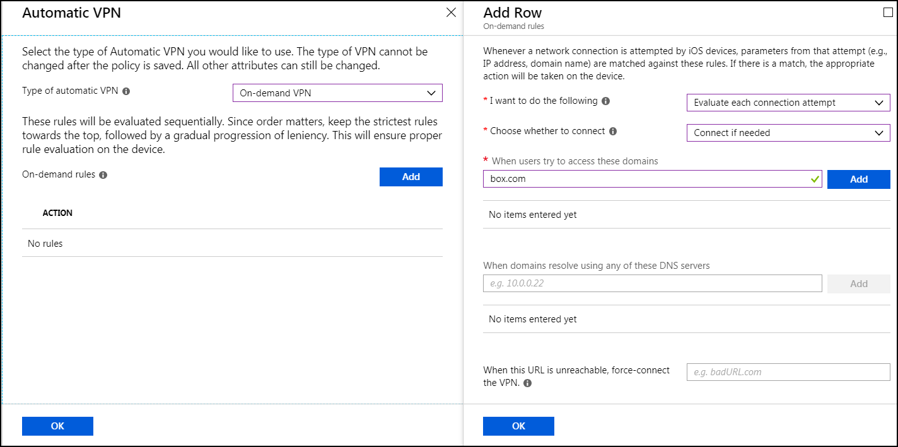

Create an On-Demand VPN Profile
You need to know the VPN Server Name and PAC URL shown in the VPN Configuration section of the Netskope UI (Settings > Security Cloud Platform > Netskope Client > MDM Distribution) to complete these steps.
To create an on-demand VPN profile:
Go to Profiles > Create Profile.
Enter and select these parameters:
Name: Enter a unique name.
Platform:
iOSProfile type:
VPN

In the Base VPN panel, enter and select these parameters:
Connection Type:
Cisco (IPSec).Click Base VPN to enter and select these parameters in a second Base VPN panel:
Connection Name: Enter a name that users will recognize when the profile is installed on their device.
IP Address or FQDN: Enter the VPN Server Name from the VPN Configuration section in the Netskope UI.
Authentication Method:
Certificates.Authentication Certificate: Click Select a certificate, select the SCEP certificate profile you previously created, and then click OK.

Split Tunneling:
Disabled
When finished, click OK in the Authentication Certificate panel and the second Base VPN panel.
Click Automatic VPN, and then enter and select these parameters:

For Type of automatic VPN, select On-demand VPN.
For On-demand rules, click Add to enter and select these parameters in the Add Row panel:
I want to do the following:
Evaluate each connection attempt.Choose whether to connect:
Connect if needed.When users try to access these domains: Add the domains for on-demand VPN, like
Box.com, and so on (separated by a comma). After entering the URLs, click Add. When this URL is unreachable, force-connect the VPN.When domains resolve using any of these DNS servers: Enter the domains to resolve with DNS servers. (Optional)
Click OK in the Edit Row panel and then the Automatic VPN panel.
Click Proxy in the left panel to enter this parameter:
Use Automatic Configuration Script: Enter the PAC URL from the VPN Configuration section in the Netskope UI.

Click OK in the Proxy panel and remaining Base VPN panel.
In the Create Profile panel, click Create.